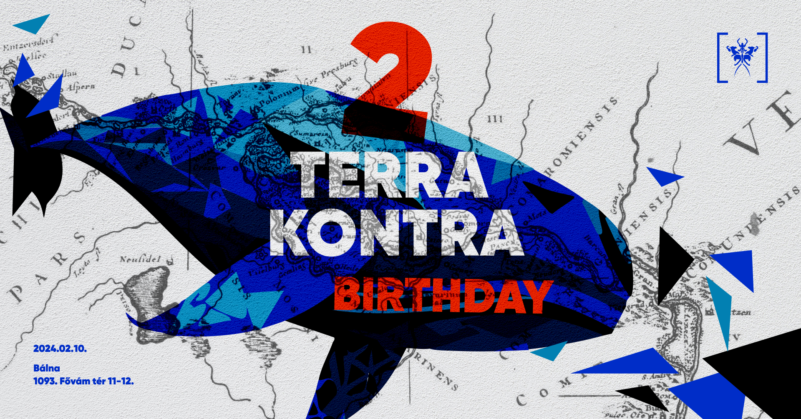

Következő event: Terra Kontra 2nd birthday
2024. február 10.
Helyszín: Bálna

Részletek
2 évesek lettünk!
26 buli, 2 fesztivál (a harmadik már készülőben) és végtelen jóérzés: ideje ismét megünnepelni, hogy nincs megállás, csak töretlen tiszavirágtánc!
Születésnapi hepajunk a Bálna gyomrában kerül megrendezésre, de ne izguljatok, gyomorsavak és sötétség helyett a Dunára néző kilátás és egy böszme nagy Martin Audio hangrendszer vár majd minket. Az említett rendszert maximálisan kihasználni idén is kis csapatunk rezidensei fogják, súlyos, mocorgós, gurulós, ropogós, aljas, matekozós vagy éppen hülyéskedős elektronikus zenék finom válogatásával. Az összes rosszcsont jelen lesz:
Den
Golan
Hanussen
Kekrim
Knoll
Milon Miller
Stark
Reméljük minden Terra Kontra szimpatizáns egyetért azzal, hogy ezen ott kell lenni!
Elővételes jegyek:
Fesztivál részletek
Dátum: július 18-21, 2024
Hely: Blues Hill Park, Felsőtárkány
What to Expect
From electrifying performances to interactive art installations, Terra Kontra III offers a blend of activities and attractions for everyone.